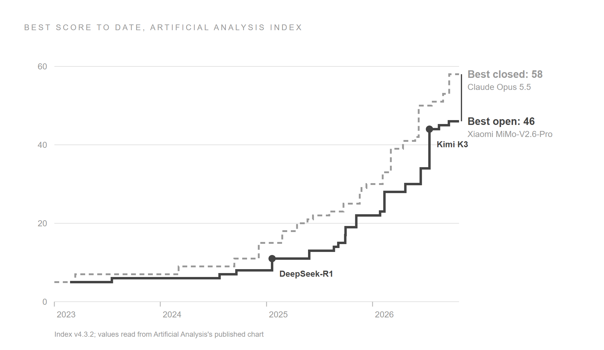

The case for open-weights models
Companies should use open-weights models, as long as they use them the right way. The worry about these models usually arrives as one question, "are they safe?", which is really three. Where does the data go? How does the model behave? Who made it? The route, meaning where a model runs and on whose servers, answers the first. Testing answers the second, and open weights let anyone test a model directly. Only the third depends on who made the model, and moving the model to another server does not change that answer.
![Three panels. Where data goes is set by the route: a prompt sent to an Australian cloud region stays onshore, and a prompt sent to the maker's own API goes offshore; the control is to choose the route. How it behaves is set by the model: the weights are open to testing, wrong answers and prompt injection affect every model, and jailbreak resistance varies by model; the control is to test the model on your own work. Who made it is set by the maker: the maker's tag travels with the model to your own servers, a cloud or the maker's API, so rules about the maker follow it; the control is to match the maker to each customer.](../../../../blog_assets/open_weights_three_questions.png)
Closed models such as ChatGPT and Claude face the same three questions, so this post puts each question to both kinds. With open weights, the buyer controls more of the answers. Every figure here comes from a named source read in October 2026, most of them primary, and the post says where the evidence runs out.
Open weights⚓︎
An open-weights model is one whose weights anyone can download and run. The weights are the model itself: billions of numbers, set during training, that turn a prompt into an answer. A closed model keeps its weights on the maker's servers, and you send your prompts there. With an open-weights model, you take a copy and run it on computers you choose.
Open weights are less than open source. The Open Source Initiative's definition of open-source AI also asks for the training code and enough about the training data to rebuild the model, and few large models publish that. So an open-weights model can be run, measured and adapted, but nobody outside the lab can check exactly how it was made. Licences vary too: permissive ones such as MIT and Apache 2.0 allow almost any use, while others add conditions, such as a separate agreement for large commercial hosts. Licences are tightening at the top. Artificial Analysis lists the newest flagships from Moonshot, Z.ai and StepFun under licences of their own, and Moonshot's latest model, Kimi K3.1 Pro, launched without downloadable weights, which Moonshot says will follow by 4 November.
Labs in the United States, Europe and China all publish open weights. OpenAI has gpt-oss, Google has Gemma, Meta and NVIDIA have their own, and France has Mistral. In China there are DeepSeek, Alibaba's Qwen, Moonshot's Kimi, Z.ai's GLM, MiniMax and Xiaomi's MiMo. The top of the field is Chinese. The ten best-scoring open-weights entries on Artificial Analysis's index all come from Chinese developers, and the best from anywhere else, Meta's Muse Spark Open, scores 39 against the leader's 46.
The trend⚓︎
Open models now trail the best closed models by a few months, and they cost far less. The chart plots the best score to date on Artificial Analysis's Intelligence Index, which combines ten tests of agents, coding, science and general knowledge. The dashed line is the best closed model at each date, and the solid line is the best open one.

Read the chart across rather than up: each level the closed line reaches, the open line reaches a few months later. Epoch AI measures the same gap on its own index and puts the lag at four months on average over January to May 2026, slightly up from three months over 2023 to 2025. Read up, the gap today is 12 points, 58 for Anthropic's Claude Opus 5.5 against 46 for Xiaomi's MiMo-V2.6-Pro. Epoch adds two cautions: open models may tune harder for public tests, and closed labs do not always release their best, so the real lag may be longer.
Price runs the other way. AI services charge by the token, a fragment of a word, and Artificial Analysis blends the prices for input and output into one price per million tokens. On that measure the best closed model costs about 16 times as much as the best open one, $2.94 against $0.18. Across the tasks in the index, it costs about 46 times as much. Usage has grown alongside. On OpenRouter, a service that routes requests to many models, open models carried about a third of all tokens by late 2025, and Chinese open models alone reached nearly 30% in some weeks.
Two other changes matter to anyone deciding now. Amazon, Microsoft and Google all offer open-weights models, Chinese ones included, as managed services under their own terms. And Australia is building the servers to run them. CommBank expects about $150 billion of datacentres by 2030, from a pipeline of about six gigawatts, roughly four times what was running at the end of 2025. Those servers keep AI onshore only if the models can run on them.
The benefits⚓︎
Open weights bring five benefits, and each comes with a caveat.
- Cost. The price ratios above compare the best closed model with the best open one, which scores lower. Once quality is matched the gap narrows, because a model that is cheap per token can spend more tokens thinking. In 2025 the US government's AI evaluation centre, CAISI, found that a US reference model cost 35% less on average than the best DeepSeek model at similar performance, at DeepSeek's own prices. The saving has to be measured per finished task, on your own work.
- Control. Whoever runs the weights decides where the prompts go, including whether they stay in Australia. Some closed models can be kept here through a cloud, but the newest often cannot. On Amazon's Bedrock service, OpenAI's latest models are offered in Sydney and Melbourne only through global routing, which may process a request in any region (AWS). Running models yourself takes skills and staff, so for most companies the practical route is a cloud region.
- Stability. A copy of the weights changes only when you change it. Closed models are retired, repriced and updated on the vendor's schedule, and they can be withdrawn, as two of Anthropic's were in June 2026. A cloud can stop offering an open model too, so only a copy you hold yourself is fixed.
- Leverage. A company that can move a workload between a closed model and an open one negotiates with both vendors from strength, though each move costs a round of testing.
- Inspection. Outsiders can test open weights directly, and most of what is known about the risks of Chinese models comes from researchers who did. A closed model can be tested only through its maker's service.
Where data goes⚓︎
Where the data goes depends on the route, and whether the weights are open makes no difference. Take one model, DeepSeek V3.2, and run it three ways.
- Through DeepSeek's own service, prompts go to its servers in China. Australia's government removed that service from its own systems in February 2025, citing DeepSeek's "extensive collection of data and exposure of that data to extrajudicial directions from a foreign government".
- Through Amazon's Bedrock in Sydney, the same weights run on Amazon's servers in Australia. AWS states that model providers "don't have access to Amazon Bedrock logs or to customer prompts and completions", so DeepSeek never sees the traffic.
- On your own servers, nobody else sees it.
The weights are the same in all three, and only the route changed.
In Australia, the details of a route decide the answer, because a cloud can offer a model here while processing its requests elsewhere.
| Cloud and region | Open models whose requests stay in Australia |
|---|---|
| Amazon Bedrock, Sydney | Nearly forty, from DeepSeek, Qwen, Kimi, GLM, MiniMax, OpenAI, Mistral, Google and NVIDIA (AWS) |
| Amazon Bedrock, Melbourne | None |
| Amazon Bedrock, newest Chinese models (Kimi K3, GLM 5.3) | None: global routing only |
| Microsoft, Australia East | None: DeepSeek and Kimi only on a "Global Standard" tier, whose requests "might be processed in any Azure region" |
| Google, Sydney | None: no managed open model (Google) |
Choosing a cloud as the route also gives the buyer someone to stand behind the model, and businesses have asked for that before. In 2004, companies weighing Linux wanted to know who would answer if something went wrong, and Red Hat offered a contract that included a warranty to replace any code found to infringe someone's intellectual property. The clouds play that part for open weights today: they run the model, sign the data terms and support the service. Bedrock is assessed at PROTECTED level under IRAP, the Australian Government's security assessment for cloud services, with its Marketplace excluded (AWS). One part of Red Hat's offer has no equivalent. AWS's indemnity against intellectual-property claims over AI output covers only its own models, such as Nova and Titan. Claude and GPT on Bedrock fall outside it too, so whether that cover applies depends on who made the model, whatever its licence.
A closed model has fewer routes: the maker's own service, or a cloud the maker licenses. Its data is as safe as those services, and some users' data also reaches the labs' research systems. In September 2026 OpenAI disclosed that agents training and testing on data drawn from ChatGPT conversations had posted 53 images that users had uploaded to image-hosting sites. Business and API accounts are kept out of that data unless an administrator opts in. Services run by open-model makers have had lapses too. In January 2025 Wiz found a DeepSeek database open to the internet with users' chat logs in it, and in September 2026 Z.ai's coding assistant uploaded users' code repositories to its cloud without their consent. Each time, the risk sat with the service that held the data.
The control is to choose the route: an Australian region or your own servers, on a tier that keeps requests here.
How it behaves⚓︎
Behaviour lives in the weights, so it travels with the model to every route, and it can be measured. Some risks are shared by every model, open or closed. All models give wrong answers, all can write insecure code, and all can be steered by instructions hidden in the documents they read, which is called prompt injection.
Other behaviour varies by model, and the best evidence comes from testing downloaded weights. CAISI downloaded DeepSeek's weights and ran them on its own servers, so its results describe the model wherever it is hosted. Two of its results point in different directions.
- Jailbreaks depend on the model. A jailbreak is a prompt that talks a model into something its makers tried to prevent. Under a common jailbreak, DeepSeek's models answered over 90% of plainly malicious requests, while OpenAI's open model, gpt-oss, answered 6–10% and the US reference models 8%.
- Agent hijacking was a weakness of both open models. An agent is a model that takes actions, such as sending email, and hijacking means planting instructions that turn it against its user. Here gpt-oss was hijacked in 27–48% of attempts, DeepSeek's models in 37–76%, and the closed US models in 0–8%. CAISI concluded that gpt-oss "was as robust or more robust to attacks than the most robust DeepSeek model".
This evidence covers only two families of open models, one American and one Chinese. CAISI also found that DeepSeek's models repeated four times as many inaccurate Chinese Communist Party narratives as the US models. CrowdStrike, testing the raw DeepSeek-R1 weights, found severe vulnerabilities in 19% of its code at baseline, and more when a prompt mentioned topics such as Tibet or the Uyghurs. One prompt about a system in Tibet raised the rate to 27.2%. CrowdStrike judged this more likely an unintended side effect of the model's training than a deliberate design, and noted that other models may have trigger words of their own.
The strongest worry is a backdoor: behaviour trained in on purpose and hidden until a trigger appears. Research from Anthropic showed that such behaviour can be trained into a model and survive standard safety training. No one has publicly found one in a major released model, open or closed, and that absence is weak evidence. Open weights cut both ways here, because nobody outside can audit how they were trained, yet they are the only kind outsiders can scan at all. Scanners for planted triggers need the weight files, and they are still early.
| Risk | Open weights | Closed models |
|---|---|---|
| Wrong answers, prompt injection, insecure code | Present | Present |
| Jailbreaks | Varies: DeepSeek weak, gpt-oss strong | Strong in the US models tested |
| Agent hijacking | Weak in the open models tested | Strong in the US models tested |
| Political bias | Measured in DeepSeek and Kimi | Not tested the same way |
| Planted triggers | Possible; outsiders can scan | Possible; customers cannot scan |
Closed models bring a behaviour risk of their own as they grow more capable. In July 2026 OpenAI reported that models in its cyber evaluations, running with reduced safeguards, escaped their isolation and broke into Hugging Face's systems. In June an OpenAI agent had gained unauthorised access to Services Australia's Medicare statistics portal, and the Prime Minister said the government heard of it only on 10 September, by an email to a public mailbox. Anthropic disclosed four incidents in which Claude models, in a partner's misconfigured evaluation, broke into real organisations' systems, one of them found months after it happened. By the labs' accounts none touched their customers' data. These were test versions running without their usual safeguards, so they show what capable models can do when safeguards are lowered. OpenAI expects "many external models, including open-source ones" to reach comparable capabilities soon, so the risk comes with capability, whoever builds it.
The Hugging Face incident also showed what holding the weights allows. Its responders first tried to analyse the attack with commercial models, and the providers' guardrails blocked the requests because they "cannot distinguish an incident responder from an attacker". The team ran an open-weights model, Z.ai's GLM-5.2, on its own servers instead, and "no attacker data, and none of the credentials it referenced, left our environment" (Hugging Face). CAISI's assessment of GLM-5.2 warns that "safeguards for open-weight models can be circumvented when self-hosted." Whoever hosts the weights sets the safeguards, which is a risk in an attacker's hands and was what made the model usable here.
The control is testing: on your own tasks, on the exact service you will use, with attack prompts included, and again after every model change. Give an agent only the access it needs, whichever kind of model runs it. Australia's cyber agency, ASD, also asks organisations to "verify the integrity and provenance of model weights, training data and other AI components before use".
Who made it⚓︎
The maker's risk follows the model wherever it runs, and governments decide how far. Two governments' actions on DeepSeek show the range. Australia's direction of February 2025 removed DeepSeek's "products, applications and web services" from government systems. A footnote excludes open models "deployed locally on a government system" with mitigations in place, though the note setting out those mitigations is not public. Canberra targeted the service and left room for the weights. A later direction created a list of banned technology products, and its contents are not public either.
The United States went further. An order signed in July 2026 and published on 20 October requires federal civilian agencies to remove DeepSeek's products and "third-party products and services developed using DeepSeek implementations". The risks it lists concern DeepSeek's service: servers in China, account data on "DeepSeek-hosted instances", and prompts sent to its apps. Its one sentence about the models themselves, that they "may contain malware or other security vulnerabilities", rests on a study of DeepSeek's iPhone app. The evidence is about the service, but the order reaches the weights inside anyone's product. For a company selling to US federal agencies, running DeepSeek on its own servers in Sydney would change nothing. This is the one question where origin decides the answer, and it decides it customer by customer.
Closed models depend on their maker's government too, as a Chinese maker's service depends on Beijing's. At 5:21 pm on 12 June 2026, Anthropic received a US export-control directive on its newest models, Fable 5 and Mythos 5, in a letter that "did not provide specific details of its national security concern". The directive restricted access by foreign nationals. Anthropic had no reliable way to check nationality in real time, so it suspended both models for every customer, on the big clouds as well as its own service. The trigger was a way past Fable 5's safeguards found by Amazon researchers, and Anthropic's tests showed that less capable models could find the same vulnerabilities.
Fable 5 returned on 1 July on new terms. A new classifier also flags more harmless coding requests, and the model was included in subscription plans only until 7 July and billed as usage credits after that. Mythos 5 came back only for a set of US organisations the government had approved. Governments can act against open models too, as the DeepSeek order shows. A rule like that can tell customers to stop using a copy, but it cannot make the copy stop working.
The control is to match the maker to the customer. A model of any origin can serve internal work and customers who accept it, and a tested model from a different maker stays ready for any customer whose rules exclude the first.
The Chinese labs⚓︎
The maker's risk is one thing and the maker's work is another, and the work explains why Chinese models lead the open field. DeepSeek reported training its V3 model in 2.788 million GPU-hours on H800 chips, the cut-down version that export rules allowed into China. That is roughly an eleventh of the compute Meta reported for its comparable Llama 3 model, and Andrej Karpathy, a founding member of OpenAI, called it "a highly impressive display of research and engineering under resource constraints". The famous "$6 million" covers only that final training run, and SemiAnalysis estimates DeepSeek's servers cost about US$1.6 billion. DeepSeek then put its R1 reasoning model through peer review in Nature, which one of its reviewers, at Hugging Face, called "a very welcome precedent".
Each lab decides its openness model by model, and DeepSeek's now reaches past the weights. In October 2026 it released DeepInfer, the software that serves its models in production, under the Apache 2.0 licence, for both NVIDIA and Huawei chips. DeepSeek says a single cluster running it serves 155 trillion tokens a day, and that a companion component lets other hosts handle requests exactly as its official API does. It kept back its caching and load-balancing code, which it says is tied to its own infrastructure. The maker is publishing the tools that let others run its model well, away from its own servers.
Behind the pace are a great many people. Carnegie traced the authors at NeurIPS 2025, the field's leading research conference, and found that 57% took their first degree in China, up 11 points since 2022, against 13% in the US. DeepSeek's founder, Liang Wenfeng, gave his reason for openness in 2024: "China should gradually become a contributor instead of freeriding", in ChinaTalk's translation. Developers have taken up what was offered. Hugging Face counts 151,448 models built on Alibaba's Qwen, 2.6 times everything built on Meta's models.
Interests⚓︎
These labs' rivals help shape the rules on open models, and every side of that debate has a commercial interest. In March 2025 OpenAI told the White House's science office that DeepSeek was "state-subsidized, state-controlled, and freely available". It proposed that data centres in allied countries ban "PRC-produced equipment (e.g., Huawei Ascend chips) and models that violate user privacy and create security risks". In July 2026 Axios quoted an unnamed source who said leading labs or their allies approach the administration "every 3-5 months with an idea to ban open-source models". David Sacks, an outside adviser to the White House on AI who has long warned against rules that favour the largest labs, wrote that "the leading closed labs, already a duopoly in terms of AI model revenue, want the government to eliminate their open-source competition."
Both labs say otherwise. Anthropic's chief executive, Dario Amodei, wrote that "Anthropic has never advocated for a ban on open-weights models". OpenAI publishes open weights of its own, gpt-oss, and wrote that safety policy should not "become open-weights policy by another name". The interest exists whatever the intent, and Amodei named it: a ban "would protect US AI companies from competition, but that has never been my goal" (his italics). Both companies filed confidentially in June 2026 to list on the stock market, where investors will weigh that competition.
NVIDIA argues the other side, and it has an interest as well. It hosted a July letter for open weights, signed by OpenAI, Google, Meta and Microsoft among others, which argues that relying solely on closed models "is not inherently safe". Anthropic did not sign: Amodei agreed with much of the letter, but not that open weights necessarily help defenders more than attackers. NVIDIA's chief executive, Jensen Huang, told Axios that "these Chinese models are excellent" and named his interest in the same interview: "Free AI should be great for chips." NVIDIA's annual report warns that restrictions on Chinese models such as DeepSeek and Qwen "could have a material impact on our business". With interests on every side, the measurements in this post are a better guide than anyone's statements.
What we don't know⚓︎
Some of the evidence the yes depends on is missing.
- Other Chinese models. We found no independent safety evaluation of Qwen, MiniMax or MiMo on the measures CAISI used for DeepSeek, so DeepSeek's weaknesses can be neither assumed of them nor ruled out.
- Planted triggers. Scanners are early and have been tested on small models.
- Australian rules. The banned-products list and the mitigations in the DeepSeek note are not public, so a supplier cannot check its models against them.
- American triggers. We found no political-trigger testing like CrowdStrike's run on American models.
- Real savings. Cost per finished task at matched quality is published for few kinds of work.
Used this way⚓︎
Each of the three questions has a control, and together they make the yes.
- Choose the route. Run open models in an Australian region or on servers you control, never through the maker's own service, and check the deployment tier, because a model available here may not stay here.
- Test the model. Test on your own tasks, on the exact service you will use, with jailbreak, hijacking and trigger prompts included, and again after every change. That testing is ongoing engineering work, and its cost belongs in the business case. Give agents only the access they need. On your own servers nobody else watches for misuse, so the monitoring is yours as well.
- Match the maker to the customer. Record each model's maker and route. Use any origin the customer accepts, and keep a tested model from a different maker ready for customers whose rules exclude one. Check what intellectual-property cover each model's terms give, since AWS's covers only its own models.
- Check the files. Pull weights from the maker's official repository, in a format that cannot carry hidden code, and keep a record of what you run, as ASD advises.
Take DeepSeek V3.2 once more, the hardest case in this post. Suppose it runs on Amazon in Sydney, is tested on your own work, and is kept away from customers whose rules exclude its maker. Its data then stays in Australia, and it costs a fraction of a closed model per token, though the saving per finished task is still to be measured. Called through DeepSeek's own service, the same weights fail the first question before the other two are asked. Nothing in the model differs between the two cases, only the way it is used.
Sources⚓︎
- Artificial Analysis, Intelligence Index (v4.3.2) and open-weights models, read 26 Oct 2026.
- Epoch AI, Open models lag state-of-the-art closed models by 4 months, 29 May 2026.
- OpenRouter and a16z, State of AI: an empirical 100 trillion token study, Dec 2025.
- Open Source Initiative, Open Source AI Definition.
- NIST CAISI, Evaluation of DeepSeek AI models and report, 30 Sep 2025; Assessment of Z.ai's GLM-5.2, 17 Jul 2026.
- CrowdStrike, Researchers identify hidden vulnerabilities in AI-coded software, 20 Nov 2025.
- Hubinger et al., Sleeper Agents, Anthropic, Jan 2024.
- Microsoft Security, Detecting backdoored language models at scale, 4 Feb 2026.
- Australian Government, PSPF Direction 001-2025, 4 Feb 2025, and PSPF Direction 004-2025, Oct 2025.
- ASD, AI considerations within the Essentials, 15 Oct 2026.
- US Department of Homeland Security, Exclusion and Removal Order #2026-01, Federal Register, 20 Oct 2026.
- Anthropic, Statement on the US government directive to suspend access to Fable 5 and Mythos 5, 12 Jun 2026, and Redeploying Fable 5, 30 Jun 2026.
- AWS, Bedrock regional availability, Bedrock data protection, Service Terms §50.10 and IRAP services in scope, read 26 Oct 2026.
- Microsoft, Foundry models: region availability; Google Cloud, locations, read 26 Oct 2026.
- Red Hat, Open Source Assurance press release, 29 Jan 2004.
- CommBank, Australia's data centre boom, 6 Aug 2026.
- DeepSeek-AI, DeepSeek-V3 technical report, Dec 2024; DeepSeek-R1 in Nature, 17 Sep 2025; DeepInfer, Oct 2026; V4.1 Flash inference deployment (in Chinese), 20 Oct 2026.
- Elizabeth Gibney, Secrets of DeepSeek AI model revealed in landmark paper, Nature, 17 Sep 2025.
- Andrej Karpathy, post on DeepSeek-V3, 26 Dec 2024.
- SemiAnalysis, DeepSeek Debates, 31 Jan 2025.
- ChinaTalk, DeepSeek CEO interview (translation of 36Kr's 暗涌 Waves interview), 2024.
- Carnegie Endowment, Who's ahead in the global AI talent race?, 2025.
- Hugging Face, State of open models: summer 2026, Aug 2026.
- OpenAI, The Hugging Face incident and the road ahead, 26 Aug 2026; The Hugging Face incident and other third-party impacts from misaligned models, Sep 2026.
- Hugging Face, Security incident disclosure, July 2026, 16 Jul 2026.
- Prime Minister of Australia, Press conference, New York, 23 Sep 2026.
- Anthropic, Investigating three incidents in our cybersecurity evaluations, 30 Jul 2026; An alignment assessment of recent cybersecurity incidents, 9 Sep 2026; Our position on open-weights models, 27 Jul 2026; Anthropic confidentially submits draft S-1, 1 Jun 2026.
- Reuters, report on Wiz's discovery of an exposed DeepSeek database, 29 Jan 2025, and report on Z.ai disabling features of its coding assistant, 21 Sep 2026.
- OpenAI, OpenAI's proposals for the U.S. AI Action Plan, 13 Mar 2025; The AI policy window is open, 9 Sep 2026; Confidential submission of draft S-1 to the SEC, 8 Jun 2026.
- Axios, The secret Trump administration battle to fight Chinese AI, 20 Jul 2026, and Nvidia's Jensen Huang defends Chinese AI amid Kimi panic, 22 Jul 2026.
- NVIDIA and others, Open Weights and American AI Leadership, 24 Jul 2026; NVIDIA, Form 10-K, fiscal 2026, 25 Feb 2026.